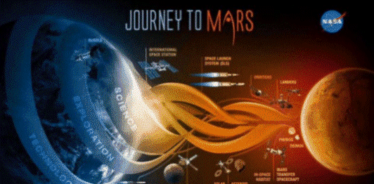

References Description:
This is a listing of references used throughout the book. It is also an acknowledgement that BARD, Google's Artificial intelligence (AI) technology, was used to create some parts of this book. The queries were original from the author but some of the responses were pure Bard. Although this book is a work of fiction, it also presents possibilities and confronts us with additional issues that will be faced in the near future.
Some of this book contains the result of Google's BARD AI queries presented by Matt Phillips. (Note: Google has since renamed BARD AI to Gemini. The idea of a Quantum Entanglement Technology was provided by Bard as a totally original result.
1. "The Sept. 2019, Ice Ages article - What are they and what causes them?" 2. NASA's - Journey to Mars.  3. NASA's Challenges 4. KIRC (Kahoolawe Island Reserve Commission). 5. Nazca Lines ('næzk') Geoglyph Nazca_Lines Peru 6. Andersgrotta World War 2 bomb shelter. 7. Lagrange points What is a Lagrange Point? Mar 27, 2018 8. ARED, (Advanced Resistive Exercise Device) 9. Chandrayaan-1 / Moon Impact Probe 10 Brain-Computer Interface (BCI)) 11. Quantum Entanglement Technology 12. University of Delaware "Building on the Moon and Mars? You'll need extraterrestrial cement for that." Date: August 10, 2022 13. Lubin's Theory of propulsion Philip Lubin's theory on space travel is based on the use of Directed Energy Propulsion (DEP).